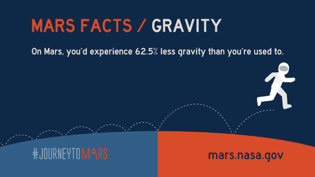

火星的基本事实
红色火星
Credit：NASA
火星是太阳系内，距离太阳从近到远的第四颗行星。
Credit：NASA
火星有两颗卫星，分别是火卫一和火卫二，一个22.2公里，一个12.6公里。
Credit：NASA
地球的直径12742公里（7926英里），火星的直径6779公里（4220英里），月球的直径3474.2公里（2159英里）。
Credit：NASA
如果你在地球上称重100磅，那么你在火星上的重量只有38磅，想要减肥吗？去火星吧！
Credit：NASA
地球平均距离太阳的1.5亿公里（1AU），火星平均距离太阳2.29亿公里（1.5AU）。
Credit：NASA
 地球环绕太阳一周365天，火星环绕太阳一周687天，一个火星年的长度约是一个地球年的两倍。
地球环绕太阳一周365天，火星环绕太阳一周687天，一个火星年的长度约是一个地球年的两倍。
Credit：NASA
地球的体积是火星体积的6倍多。
Credit：NASA
火星的平均温度为零下63摄氏度，地球平均温度为14摄氏度。
火星最高温度为30摄氏度，地球最高温度为58摄氏度。
火星最低温度为零下140摄氏度，地球最低温度为零下88摄氏度。
Credit：NASA
火星的核心和地球类似，但火星的确切结构尚不清楚。
Credit：NASA
火星的重量大约是地球的十分之一。
Credit：NASA

在火星上，你的重力比地球上小62.5%，所以你会跳的更远。
Credit：NASA
火星的大气层非常稀薄，96%是二氧化碳，氮气小于2%，氩气小于2%，其他成分小于1%。地球的大气成分78%是氮气，21%是氧气，其他成分占1%。
Credit：NASA
行星火星：单击（或触摸）并拖动以与该行星火星3D模型进行交互。
参考：
https://mars.nasa.gov/all-about-mars/facts/